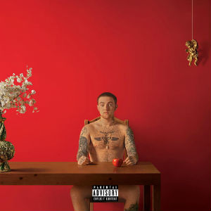
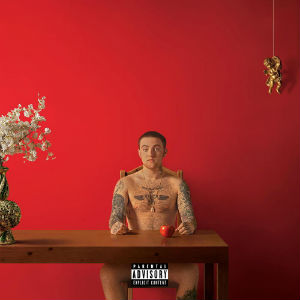
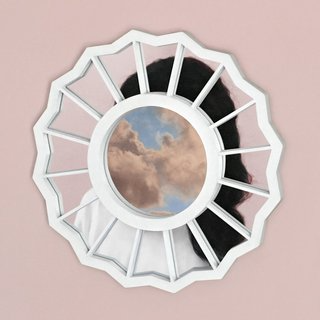
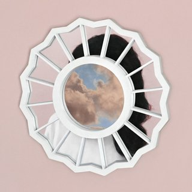

 



In the week after the overdose death of Pittsburgh-born rapper, producer and songwriter Mac Miller in 2018, streams of his music catalog grew 970% and his 2018 album “Swimming” made its way to #1 on the Billboard Top 100 albums. Now five years later, his popularity remains consistent.
Beginning his career in 2007 as “Easy Mac,” he started releasing mixtapes as a kid for fun and started picking up popularity due to releasing music videos on a new video sharing platform known as Youtube. In his 11-year career, Miller released a total of 23 musical projects: 13 mixtapes, six studio albums, two live albums and two extended plays.

The Sad Reality
Like life, artists die and when they do, their music tends to garner more attention and streams due to the news of their death. Fans of artists and people who were not familiar tend to latch onto songs from that artist and play it in the weeks after the news. There have been numerous cases of artists getting more streams post-death such as XXXTentacion, Pop Smoke, JuiceWrld, Prince and Takeoff from the rap group Migos. Mac Miller is no different.His death marked a moment of sustained success and popularity after he was gone.
The Case of Mac Miller
According to Billboard and Nielsen music, in the week following Miller’s death, his streams grew 970% and his 2018 album “Swimming” made its way to #1 on the Billboard Top 100 albums. In the month spanning from Aug. 2018 to Sept. 2018, according to Chart Metric data, he gained around 6.5 million monthly listeners, likely associated with his death in early September.
But, his numbers never dipped or even plateaued., Rather, his streams saw a steady increase in monthly listeners with his total Spotify monthly listeners increasing by 1.76 million from Dec. 2018 to Dec. 2019.
Circles and Mac's 2020 Success
In Jan. 2020, Miller’s estate along with producer Jon Brion released his only posthumous album, “Circles”.
One week before "Circles” was released, Miller’s estate dropped the first and only single for the album in “Good News.” According to Chart Metric data, “Good News,” along with the “Circles’' release, bolstered nearly 11 million more monthly listeners in the span of one month.
The week of his death in 2018, his monthly listenership increased to a little over 14 million listeners. After the Circles release, he continued this trajectory of success by not falling below 13 million listeners to present day.
Mac Miller's Estate and their Tactics
Mac Miller’s estate has promised not to release any new albums from Miller as they believe it would be a disservice to what he would want. While this is the case, they have found ways to keep Miller’s name in the spotlight with the approval of some feature verses, playlist placements and in the biggest way: re-releasing some of his off-streaming mixtapes onto streaming services.
Mixtape Re-Releases
The mixtapes that the estate released in the span of five years since his death include “The High Life,” “Macadelic,” “I Love Life, Thank You,” “K.I.D.S” and “Faces.” These re-releases along with playlist placements have brought Miller’s monthly listeners to an all-time high, sitting at 24.5 million as of Dec. 2023.
Miller's Life with the Spotlight
Miller was well-known in the Hip-Hop community. He received a plethora of tribute tweets after his death from many musicians and Hip-Hop icons.

From left: The Alchemist, Schoolboy Q, Earl Sweatshirt, Vince Staples, Anderson Paak, J.I.D, Action Bronson, and Thundercat backstage at Mac Miller's Memorial Tribute Concert
Mac was even somewhat prevalant in popular culture, featuring on songs such as the 2013 Ariana Grande track, “My Way.” He later dated Grande from Aug. 2016 to May. 2018, putting him in the spotlight, yet even that did not apply to the increase in music popularity that his death did.

The Bottom Line
While people die and the music lasts forever, it often cannot take back the pain that family and fans of Miller felt when he passed away. The music can ease the pain and help mask it, but his estate and fans should rest easy knowing that Miller’s numbers will continue to stay high and that more people will find and appreciate Mac Miller every day. Rest in Peace Mac Miller; the most dope.